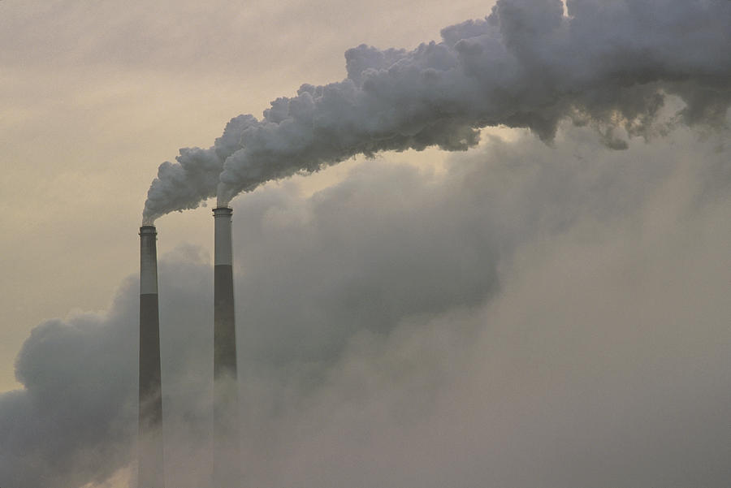

Ice Cap Melt

Burning fossil fuels have not only impacted our enviroment but also the main contribution of the ice melting in the Artic ice. The impact is significant as it was able to raise the water level. The polar ice caps have melted faster in last 20 years than in the last 10,000. Satellites study confirmed that the melting ice caps are raising sea levels at an accelerating rate than ever before. Today, we find carbon particles on the ice sheets of the polar artic. This serves as a hugh impact as the black spots found in the ice today are absorbing more light and creating more ice melt.
Home | Cause of Pollution | City Pollution | Ice Cap Melt | What Can We DO?
Click here for more information!